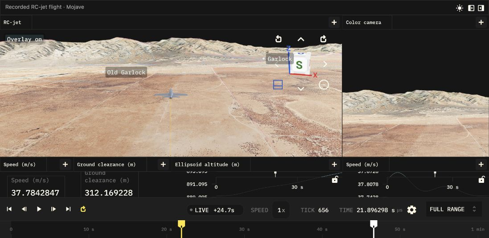

Cesium terrain
You have a Cesium ion account and a latitude/longitude in mind. Start by flying RC-jet at Mojave, then move the simulation to your chosen site.
The desktop example runs Python/JAX while streaming the scenery. The linked WASM demo is a separate browser prototype: it replays a prepared recording and streams the terrain. Publishing another flight there still requires a rebuild.

The browser demo: a recorded flight, live terrain streaming and an optional OSM overlay.
1. Choose your scenery
In Cesium ion, enable the assets used by your selected mode:
| Scenery | RC-jet launcher defaults |
|---|---|
| Terrain and aerial imagery | World Terrain (1) and imagery (2) |
| Photo 3D, including buildings where covered | Google Photorealistic 3D Tiles (2275207) |
Photo 3D is the default. It supplies the visuals; the example also uses World
Terrain (1) for physical ground heights. Coverage and detail vary by location.
Create a read-only ion token for the required assets. Save its value in
$HOME/.config/elodin/cesium-ion-token.txt; create the directory if needed.
For a public browser build, use a separate token restricted to its assets and
deployment origin. That token will be visible to visitors.
2. Try a flight at Mojave
From the Elodin repository root:
export ELODIN_SHELL_ID=cesium
nix develop
just install py
just install editorInside that shell, launch RC-jet with your token file:
export CESIUM_ION_TOKEN_FILE="$HOME/.config/elodin/cesium-ion-token.txt"
bash examples/cesium/run_rc_jet_terrain.shThe flight starts at 35.350664° N, 117.809027° W. Bevy-Cesium streams and renders the surroundings for the editor and its sensor cameras.
For terrain and aerial imagery instead of Photo 3D:
bash examples/cesium/run_rc_jet_terrain.sh --photo3d offFor the original local Mojave terrain, without streaming:
unset CESIUM_ION_ASSET_ID CESIUM_ION_TOKEN CESIUM_TILESET_URL
ELODIN_RC_JET_TERRAIN=planar elodin editor examples/rc-jet/main.py3. Put the flight at your coordinates
The current RC-jet example needs two matching settings:
- In
examples/rc-jet/scenario.py, updateMOJAVE_RC_FIELDwith your latitude, longitude and field elevation. The scenario derives its initial ECEF pose from this site. - In
examples/rc-jet/bdx_schematic.py, updateui.coordinate(...)to the same site. Latitude and longitude are degrees; altitude is meters above the WGS84 ellipsoid.
Disable the bundled Mojave-specific OSM data at another location:
export ELODIN_CESIUM_OVERLAY_FILE=''Run the Cesium launcher again. It prepares heights around the new initial position.
There is no latitude/longitude launcher switch yet. Changing only the editor's origin does not relocate the simulation or an existing recording. For your own model, use the existing coordinate-system primitives to keep initial conditions, height queries and the displayed scene compatible.
4. Give the physics a ground surface
el.terrain_heightmap() prepares and caches heights through Bevy-Cesium before
the simulation starts. JAX samples that fixed grid during the run, without
network access.
- Cover the planned flight with the grid and check the lookup's
validresult. - Start above the sampled ground. Heights are relative to the WGS84 ellipsoid, not mean sea level.
- Implement contact in your model. Photo 3D buildings are visible geometry; they do not automatically provide collisions.
See Terrain heights for an API example, units and cache options. Cached heights do not make the visual scenery available offline.
5. View the browser demo
Open RC-jet in the WASM editor. Use the timeline to replay the flight, move the viewport, and toggle the experimental OpenStreetMap layer with Overlay.
- Flight data: selected telemetry exported from a local Elodin DB is embedded in the WASM bundle and loaded into browser memory. The original DB is not hosted by the demo.
- Hosting: GitHub Pages serves the static application. There is no database server behind this demo.
- Scenery: tiles stream on demand through an adaptation of Bevy-Cesium's renderer with an experimental Rust browser backend. Desktop uses Cesium Native.
- Cameras: the browser demo has a color view; infrared has not been ported.
Your own flight needs a new recording, an export of its telemetry, matching geographic settings and assets, and a rebuilt browser application. The demo has no general DB upload or location picker yet.
If the first view is slow or blurry
- Allow terrain to load; turning toward a new area requests more tiles.
- On desktop, try
--photo3d off, or increaseCESIUM_MAXIMUM_SCREEN_ERRORto request less detail (the launcher defaults to48). - If loading fails, check token access to every selected asset and, for a browser token, the allowed origin.